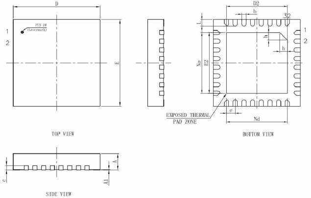

Packaging and development board
X1 is available in QFN32 4×4 mm and QFN68 7×7 mm packages, and can quickly complete display, audio, sensor and communication function verification through the core board. The number of IOs, display/camera interface, external storage, audio channels, and PCB process should also be considered when selecting.
Chip packaging
encapsulation |
size |
Applicable direction |
|---|---|---|
QFN32 |
4×4 mm |
Wearable and small HMI products with limited space and controllable number of interfaces |
QFN68 |
7×7 mm |
Products requiring more GPIO, RGB/DVP, dual-channel audio, or external storage expansion |


The package diagram is used for structure and pad understanding, and it is not recommended to manually create mass production packages directly based on it. The PCB library should use the controlled footprint in the hardware release package and focus on center thermal pads, solder mask windowing, stencil segmentation and reflow soldering processes.
core board
The core board integrates chips, power supplies, clocks and high-risk high-speed devices into verified modules, which is suitable for first completing the evaluation of software functions and overall machine interfaces.


The S1 core board in the manual leads to common signals such as power supply, UART, PDM/I2S, I2C, LCD, touch, USB, PWM, QDEC, ADC, etc. S2/S3 or subsequent versions may adjust pins and materials, and the software configuration must correspond to the actual board version.
Check before boarding
Check the board silk screen, BOM version, chip packaging and
projects/<project>configuration in the project.Confirm that there are no conflicts in the multiplexing groups used by LCD/CTP, camera, Flash, audio, and sensors.
The debugging port, startup pin and mass production test points should be reserved in the schematic stage, and verification should be completed before mass production locks the safety configuration.
High-speed display, USB, crystal oscillator and RF networks follow the reference layout and are not routed across split grounds or in the antenna clearance area.
Note
The full pin muxing table is long and changes with packages, boards, and SDK versions. This manual retains the selection and inspection methods; specific pins are subject to the hardware release package, board-level schematic diagram and engineering configuration.